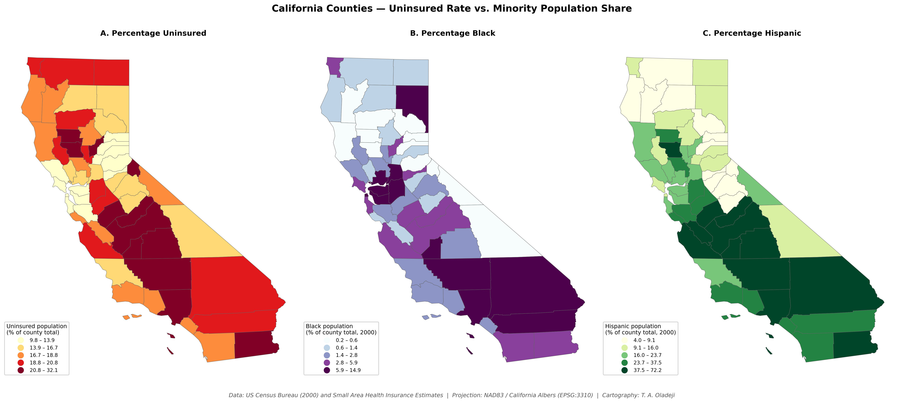

State of California health officials suspected that uninsured populations correlate spatially with minority populations across California counties. This analysis tests that hypothesis by comparing the geographic distribution of uninsured rates against the distributions of Black and Hispanic populations across all 58 California counties, and quantifies the strength of those relationships.

Three-panel comparison of percentage uninsured (A), percentage Black (B), and percentage Hispanic (C) populations across California counties. Each panel uses quantile classification to support cross-panel rank comparison.
Open the Interactive Map →The map of uninsured rate (Panel A) and the map of Hispanic population share (Panel C) are visually almost indistinguishable. The Central Valley counties (Fresno, Kern, Madera, Tulare, Merced) and the Mexican-border region (Imperial, San Bernardino interior) appear in the highest classes on both maps. The northern coastal counties show low values on both. The Pearson correlation of r = 0.72 across 58 counties reflects what the eye already sees.
The map of Black population share (Panel B) shows a geographic pattern that does not overlap with either of the other two. The Black population in California concentrates in the urban Bay Area (Alameda, Contra Costa, San Francisco) and the Los Angeles basin — counties that have moderate uninsured rates due to employer-based coverage availability in urban service-sector economies. The result is r = 0.00 — statistical independence between uninsured rates and Black population share at the county level.
In line with documented patterns in U.S. health insurance literature, the spatial co-occurrence of high Hispanic population share and high uninsured rates reflects three structural drivers: the agricultural and service-sector economic geography of the Central Valley (with employer-based coverage gaps), immigration-status-based exclusion from federal public coverage programs during the analysis period, and historical disparities in Medicaid enrollment outreach. The map captures the cumulative footprint of these structural drivers across California's county geography.
Black Californians cluster in counties with comparatively robust urban labor markets, where employer-based health insurance availability is higher. The uninsured population in those same urban counties tends to be a different demographic — younger workers, recent migrants from other states, gig-economy workers — whose insurance status reflects employment structure rather than racial identity. The independence is itself the finding: in California specifically, racial identity does not predict county-level uninsured rates for Black residents the way it does for Hispanic residents.
From a public health resource allocation perspective, this analysis suggests that coverage expansion efforts in California should be designed differently for Black and Hispanic target populations. For Hispanic Californians, geographic targeting (Central Valley counties, border counties) is highly efficient — outreach concentrated in those counties will reach a substantial share of the uninsured Hispanic population. For Black Californians, geographic targeting at the county level is less efficient; effective outreach requires sub-county or community-level targeting within urban counties where the demographic and economic geography are decoupled.
The three percentages were calculated directly from the 2000 US Census data: Black and Hispanic population counts were divided by total population per county to produce percentage rates. The uninsured rate (UINPCT) was used as provided from the Small Area Health Insurance Estimates dataset. All three variables were mapped using quantile classification (5 classes) — each panel's color scheme corresponds to the top 20%, next 20%, and so on of that variable's distribution. This supports rank-based visual comparison across panels even though the absolute breakpoints differ.
The Pearson correlation coefficients quantify the spatial co-occurrence in a single number. The 0.72 / 0.00 contrast is so stark that no further statistical testing is needed to interpret the substantive finding; the maps and the correlation matrix tell the same story.
The three-panel static figure remains the primary evidence for this analysis. The substantive question (does uninsured geography align with minority geography?) is best answered by viewing all three maps side by side at the same scale, with the same projection, in a single frame, which a layer toggle cannot replicate.
The interactive companion map, built with GeoLibre, serves a different purpose: it lets a reader look up any individual county. Clicking a county reports its uninsured rate, uninsured count, Black and Hispanic population shares, and total population. The companion uses the same data layer, percentage formulas, five-class quantile breaks, and colour schemes as the static figure, and outlines the three counties in the top quintile on all three variables (Kern, Kings, and Los Angeles). Panels A, B, and C are switched on and off in the Layers panel.
This California analysis pairs with the Harris County, Texas project, which examines tract-level housing and socioeconomic indicators at a finer geographic scale, and the Kentucky lung cancer mortality project, which uses similar statistical methodology in a cancer-epidemiology context. Together, the three projects illustrate the range of public health questions tractable with the same open-source geospatial stack — from broad county-level comparison to fine-grained census-tract exploration.
This analysis is a Python re-implementation of an ArcGIS Pro exercise (Assignment 3-1) from the GIS Tutorial for Health (Kurland & Gorr, Esri Press), originally delivered in a graduate course on GIS and Public Health at the University of Cincinnati. Curriculum design and assignment specifications are by Dr. Diego Cuadros (UC Digital Epidemiology Laboratory). The Python implementation, the correlation analysis, the cross-burden county identification, and the interpretive discussion are by the author.